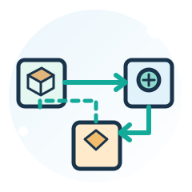
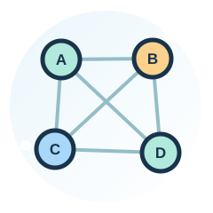
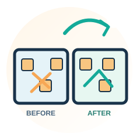

สัปดาห์ที่ 02บทที่ 1
ความเป็นมาและปัญหา วัตถุประสงค์ ขอบเขต และประโยชน์ที่คาดว่าจะได้รับ
Gantt Chart · Industrial Plant Design
วางแผนการทำรายงานวิศวกรรมบทที่ 1–5 ติดตามงานที่ต้องส่งและจุดตรวจความก้าวหน้า ตลอด 17 สัปดาห์ของภาคเรียน โดยทุกกลุ่มใช้กำหนดส่งเดียวกัน
กำหนดส่งเหมือนกันทุกกลุ่ม: รายงานบทที่ 1–5 ส่งเป็นฉบับร่างเพื่อตรวจและปรับแก้ ก่อนส่งฉบับสมบูรณ์ในสัปดาห์ที่ 16

สัปดาห์ที่ 02ความเป็นมาและปัญหา วัตถุประสงค์ ขอบเขต และประโยชน์ที่คาดว่าจะได้รับ

สัปดาห์ที่ 10ทฤษฎีการวางผังโรงงาน SLP, From-To, ARC, Load-Distance และเอกสารอ้างอิง
ข้อมูลการผลิตและผังเดิม From-To, ARC, Relationship Diagram, Block Layout 2 ทางเลือก และการตรวจข้อจำกัด
ผลเปรียบเทียบ 3 ผัง: ระยะทาง 8 คู่แผนก + 2 เส้นทางท่า, ต้นทุน, ความคุ้มค่า และภาพผังดิจิทัล

สัปดาห์ที่ 15สรุปตามวัตถุประสงค์ อภิปรายผล ข้อเสนอแนะ และร่างรวมเล่มพร้อมบทคัดย่อ/บรรณานุกรม
รายงานบทที่ 1–5 ฉบับปรับแก้ พร้อมสื่อนำเสนอและการตอบคำถาม
แสดงช่วงพัฒนารายงานและสัปดาห์กำหนดส่ง โดยบทที่ 3 มีช่วงดำเนินงานยาวที่สุด เพื่อรองรับการวิเคราะห์ข้อมูลและออกแบบผัง
↔ บนมือถือปัดตารางซ้าย–ขวาเพื่อดูครบ 17 สัปดาห์
| กิจกรรม | 01 | 02 | 03 | 04 | 05 | 06 | 07 | 08 | 09 | 10 | 11 | 12 | 13 | 14 | 15 | 16 | 17 |
|---|---|---|---|---|---|---|---|---|---|---|---|---|---|---|---|---|---|
| บทที่ 1บทนำ | ■ | ◆ | – | – | – | – | – | สอบ | – | – | – | – | – | – | – | – | สอบ |
| บทที่ 2ทฤษฎีและงานวิจัยที่เกี่ยวข้อง | – | – | ■ | ■ | ■ | ■ | ■ | สอบ | ■ | ◆ | – | – | – | – | – | – | สอบ |
| บทที่ 3วิธีดำเนินงานวิจัย | – | ■ | ■ | ■ | ■ | ■ | ■ | สอบ | ■ | ■ | ■ | ◆ | – | – | – | – | สอบ |
| บทที่ 4ผลการดำเนินงานวิจัย | – | – | – | – | – | – | – | สอบ | – | – | – | – | ■ | ◆ | – | – | สอบ |
| บทที่ 5สรุปผลและข้อเสนอแนะ | – | – | – | – | – | – | – | สอบ | – | – | – | – | – | – | ◆ | – | สอบ |
| รวมเล่มรายงานฉบับสมบูรณ์และการนำเสนอ | – | – | – | – | – | – | – | สอบ | – | – | – | – | – | – | ■ | ◆ | สอบ |
โรงงานต่างกัน แต่ทุกกลุ่มส่งรายงานในสัปดาห์เดียวกัน เพื่อให้มีช่วงเวลาเรียนรู้ วิเคราะห์ และรับข้อเสนอแนะอย่างเท่าเทียม
↔ บนมือถือปัดตารางซ้าย–ขวา · บ1–บ5 = ส่งรายงานแต่ละบท · เล่ม = ส่งฉบับสมบูรณ์
| กลุ่ม / สัปดาห์ | 01 | 02 | 03 | 04 | 05 | 06 | 07 | 08 | 09 | 10 | 11 | 12 | 13 | 14 | 15 | 16 | 17 |
|---|---|---|---|---|---|---|---|---|---|---|---|---|---|---|---|---|---|
| กลุ่ม 01ผลิตชิ้นส่วนโลหะแผ่น | – | บ1 | – | – | – | – | – | สอบ | – | บ2 | – | บ3 | – | บ4 | บ5 | เล่ม | สอบ |
| กลุ่ม 02ฉีดขึ้นรูปชิ้นส่วนพลาสติก | – | บ1 | – | – | – | – | – | สอบ | – | บ2 | – | บ3 | – | บ4 | บ5 | เล่ม | สอบ |
| กลุ่ม 03ประกอบอุปกรณ์ไฟฟ้าและอิเล็กทรอนิกส์ | – | บ1 | – | – | – | – | – | สอบ | – | บ2 | – | บ3 | – | บ4 | บ5 | เล่ม | สอบ |
| กลุ่ม 04ประกอบพัดลมและระบบระบายอากาศ | – | บ1 | – | – | – | – | – | สอบ | – | บ2 | – | บ3 | – | บ4 | บ5 | เล่ม | สอบ |
| กลุ่ม 05บรรจุผลิตภัณฑ์อาหารแห้ง | – | บ1 | – | – | – | – | – | สอบ | – | บ2 | – | บ3 | – | บ4 | บ5 | เล่ม | สอบ |
ใช้เป็นรายการตรวจสอบในการพัฒนารายงาน เรียงกิจกรรมให้สอดคล้องกับเนื้อหาที่เรียนในแต่ละสัปดาห์
อ่านข้อมูลโรงงานและสภาพปัญหาที่ได้รับมอบหมาย; ร่างความเป็นมาและความสำคัญของปัญหา
จัดทำบทนำครบหัวข้อและศึกษาผลิตภัณฑ์/ลำดับผลิตเพื่อเตรียมเขียนบทที่ 3
จัดทำ Routing Sheet, OPC และตารางภาระงานเครื่องจักรจากชุดข้อมูลที่โจทย์ให้
สืบค้นหลักการวางผังโรงงานและแหล่งอ้างอิงที่เกี่ยวข้องกับกรณีศึกษา
ศึกษาความหมาย ตัวแปร และหน่วยของ Load-Distance เพื่อเตรียมการประเมินผัง
อธิบายประเภทผังเดิมและหลักการเลือกผังที่เหมาะกับระบบการผลิต
อธิบายตำแหน่งแผนก ทางเดิน จุดปัญหา และหลักฐานจากข้อมูลที่กำหนด
สัปดาห์สอบตามแผนรายวิชา; ไม่มีกำหนดส่งกรณีศึกษา
ทำ From-To Chart และ Spaghetti Diagram พร้อมตรวจยอดการไหลและเส้นทางผ่านท่ารับ–ส่ง
ส่งทฤษฎี/งานวิจัย และจัดทำ ARC ครบ 15 คู่พร้อม Relationship Diagram
จัดทำ Block Layout อย่างน้อย 2 รูปแบบ พร้อมพิกัด ทางเดิน และตารางพื้นที่
ตรวจการจัดพื้นที่ ระบบขนถ่าย ความปลอดภัย และข้อจำกัด H01–H10
คำนวณ Load-Distance และต้นทุนรวมทั้ง 10 เส้นทางของผัง 3 แบบ พร้อม Payback/NPV ตามโจทย์
สรุปผลการเปรียบเทียบ วิเคราะห์เหตุผลการเลือกผัง และแนบผังดิจิทัล 2 มิติ
เขียนสรุปและข้อเสนอแนะ จัดบทคัดย่อ/บรรณานุกรม พร้อม WBS, Gantt, CPM ตามข้อมูลที่ให้
ส่งรายงานแก้ไขครบ 5 บทและสื่อนำเสนอ; นักศึกษาทุกกลุ่มนำเสนอผลและตอบคำถาม
สัปดาห์สอบตามแผนรายวิชา; ไม่มีกำหนดส่งกรณีศึกษา